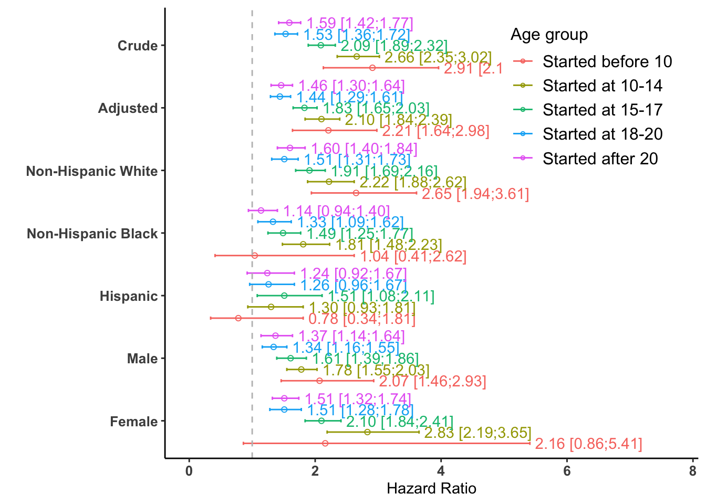
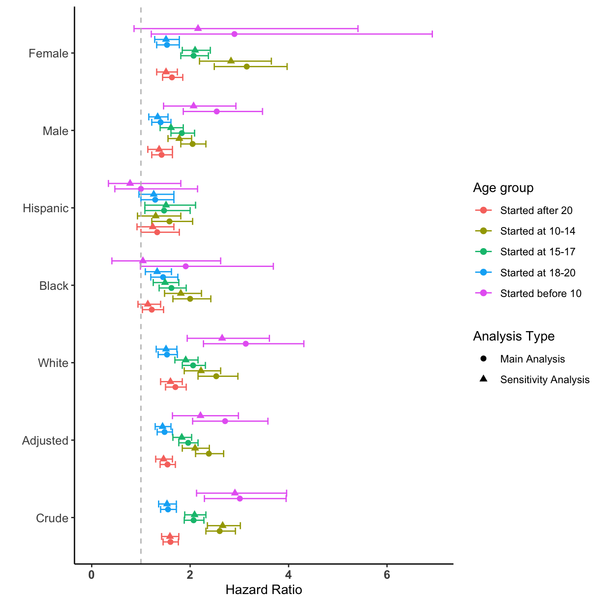
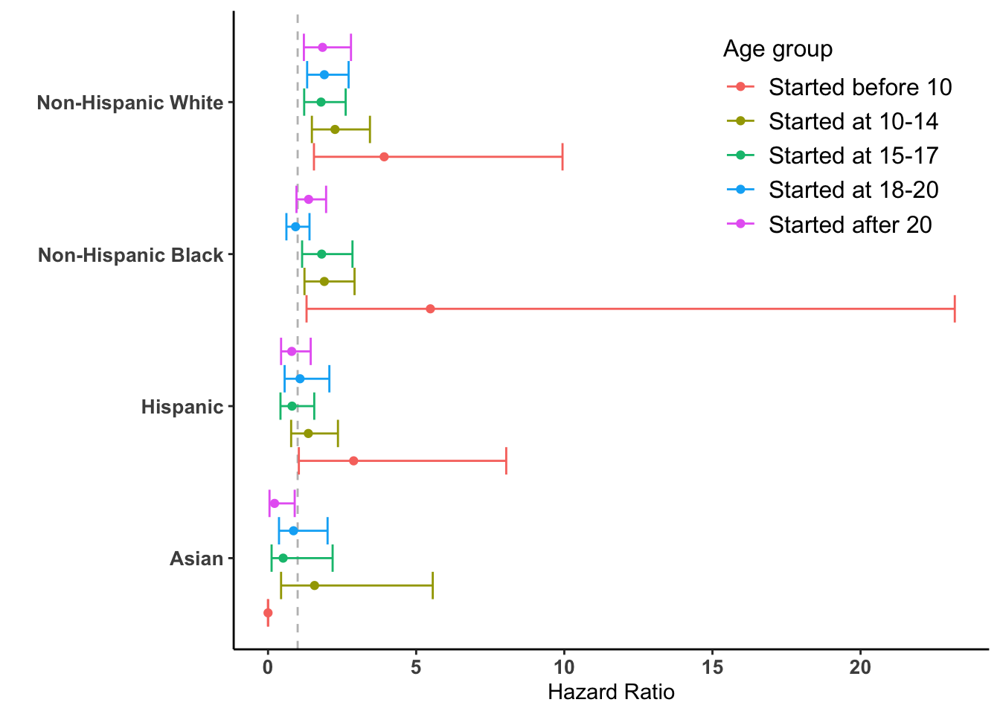
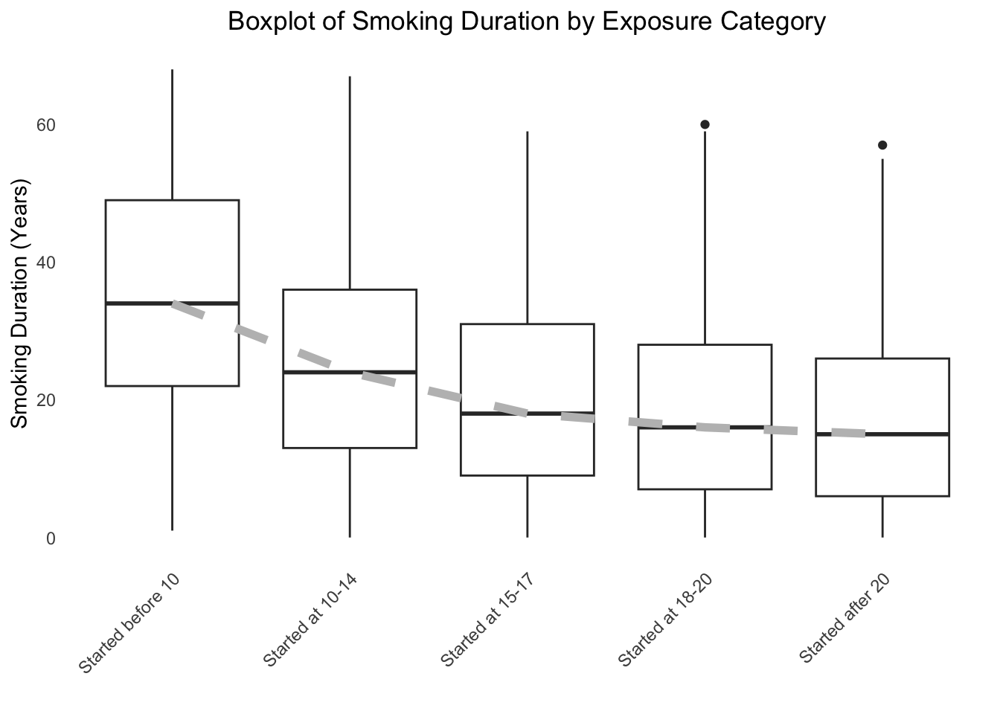
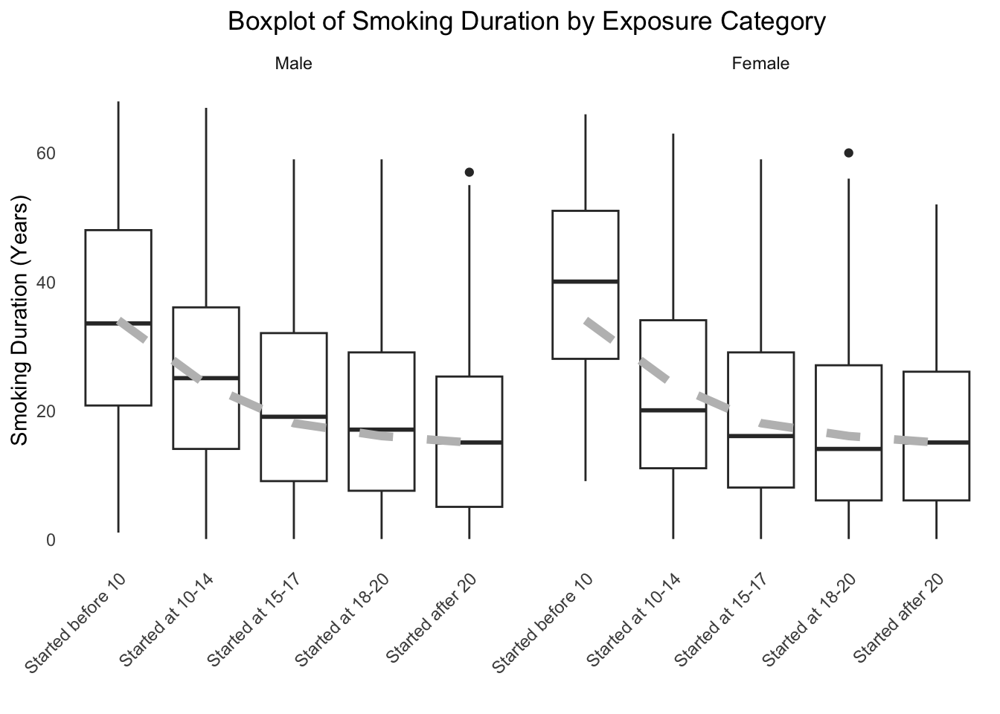
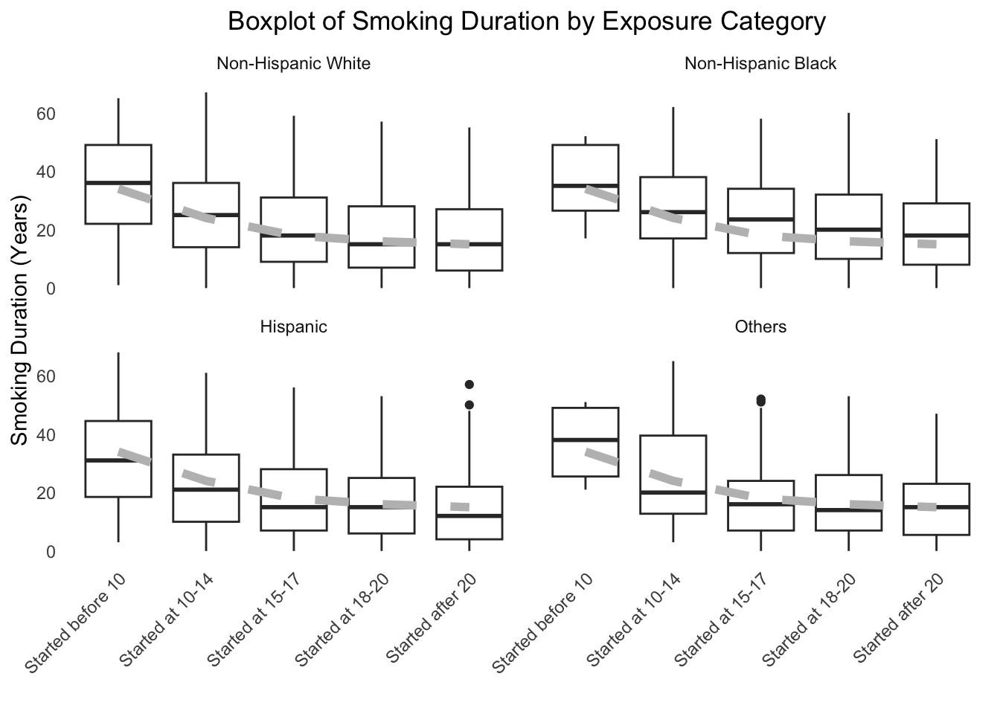

This chapter presents several analyses conducted to further assess and understand the primary findings regarding association between early-smoking initiation and mortality. It includes two sensitivity analyses and one exploratory analysis of a potential mediator.
Adjustment for Socioeconomic Status (SES) Proxies: This analysis investigates whether the observed associations are substantially influenced by socioeconomic factors. This is achieved by adjusting for additional variables, such as family poverty income ratio (PIR), which compares household income to the poverty threshold adjusted for household size and composition (NHANES variable INDFMPIR) , and the education level of the household head (NHANES variable DMDHREDU). These variables serve as proxies for family socioeconomic status.
Effect Modification by Race/Ethnicity (2011-2018): This analysis examines how findings might vary when considering the “non-Hispanic Asian” racial classification, which was introduced in the 2011 survey cycle. It focuses on effect modification by race/ethnicity within the survey cycles spanning 2011 to 2018, which incorporate the Asian race/ethnicity category.
Exploratory Analysis of Smoking Duration: This analysis investigates the relationship between the age of smoking initiation and the total duration of smoking, a potential mediator in the pathway to mortality.
The key methods and the paper figures/tables they reproduce are summarized below:
Analysis
Purpose
Key Method
Reproduces
Adjustment for SES Proxies
To test if the main findings are robust to confounding by socioeconomic status.
Added pir (income) and HHedu (education) as covariates to the adjusted Cox model.
12.1 Sensitivity Analysis 1: Adjustment for SES Proxies
12.1.1 Data Reprocessing with SES Variables
Our primary analysis did not include socioeconomic status (SES) variables because they had a high number of missing values. To ensure these factors were not confounding our results, we performed this sensitivity analysis. This required reprocessing the raw NHANES data to create a new dataset that includes the following 2 variables as well:
Demographics:
“INDFMPIR”: Ratio of family income to poverty (family SES)
“DMDHREDU”: Education level of the household head (family SES)
R Code Chunk 1: Data Reprocessing and Cleaning with SES Variables
The code steps for data downloading, cleaning, and merging are nearly identical to the process in main analysis. The key new data preparation steps for this sensitivity analysis are the cleaning of the two SES proxy variables, pir and HHedu.
for (i inseq_along(data_all2)) {# Set Data dat2 <- data_all2[[i]]## ID dat2$id <- dat2$SEQN## Demographic### Age (for eligibility) dat2$age <- dat2$RIDAGEYR### Sex dat2$sex <- dat2$RIAGENDR### Race/Ethnicity dat2$race <- dat2$RIDRETH1 dat2$race <- car::recode(dat2$race, recodes =" 'Non-Hispanic White'='White'; 'Non-Hispanic Black'='Black'; c('Mexican American','Other Hispanic')='Hispanic'; else='Others'") dat2$race <-factor(dat2$race, levels =c("White", "Black", "Hispanic", "Others"))### Country of birth dat2$born <- dat2$DMDBORN dat2$born <- car::recode(dat2$born, recodes =" c('Born in Mexico','Born Elsewhere', 'Others') = 'Other place'; c('Born in 50 US States or Washington, DC', 'Born in 50 US states or Washington, DC') = 'Born in US'; else = NA") dat2$born <-factor(dat2$born, levels =c("Born in US", "Other place")) data_all2[[i]] <- dat2}
Poverty Income Ratio: The poverty income ratio (INDFMPIR) is provided as a continuous variable. To make it easier to use in our models, the following code uses the cut() function to categorize the numeric ratio into five distinct, interpretable groups, from “Below Poverty Line” to “High Income.”
Show/Hide Code
for (i inseq_along(data_all2)) {# Set Data dat2 <- data_all2[[i]]# Set Poverty Income Ratio dat2$pir <- dat2$INDFMPIR# Cut into five distinct groups dat2$pir <-cut(dat2$pir,breaks =c(-Inf, 1, 1.99, 3.99, 4.99, Inf),labels =c("Below Poverty Line","Near Poverty Line","Low to Middle Income","Middle to High Income","High Income"),right =FALSE)# Return data_all2[[i]] <- dat2}
Household Head Education Level: The coding for household head education also changes over the survey years, with the 2017-2018 cycle using a different variable name (DMDHREDZ) and different text labels. The code below uses an if-else statement to handle this inconsistency. It applies one set of recoding rules for the first nine cycles and a different set for the final 2017-2018 cycle, ensuring the final HHedu variable is harmonized across all datasets.
Show/Hide Code
for (i inseq_along(data_all2)) {# Set Data dat2 <- data_all2[[i]]if (i <10) {# Set Education Level of the Household Head# Now, use case_when() for robust recoding dat2$HHedu <-case_when( dat2$DMDHREDU %in%c("Less Than 9th Grade", "9-11th Grade (Includes 12th grade with no diploma)", "Less than high school degree") ~"Less than high school", dat2$DMDHREDU %in%c("High School Grad/GED or equivalent", "Some College or AA degree", "High school grad/GED or some col") ~"High school or college", dat2$DMDHREDU =="College Graduate or above"~"College graduate or above",TRUE~NA_character_# This handles "Refused", "Don't know", and any other non-matches )# Convert to a factor with the correct levels dat2$HHedu <-factor(dat2$HHedu, levels =c('Less than high school','High school or college', 'College graduate or above'))# Return data_all2[[i]] <- dat2 }# For the 10th dataset (2017-2018)else { dat2$HHedu <-as.character(dat2$DMDHREDZ) dat2$HHedu <- dplyr::recode(dat2$HHedu,`Less than high school degree`='Less than high school',`High school grad/GED or some college/AA degree`='High school or college',`College graduate or above`='College graduate or above',.default =NA_character_#`Refused` = NA_character_,#`Don't know` = NA_character_ ) dat2$HHedu <-factor(dat2$HHedu, levels =c('Less than high school','High school or college','College graduate or above'))# Return data_all2[[i]] <- dat2 }}
Show/Hide Code
# Remaining Variablesfor (i inseq_along(data_all2)) {# Set Data dat2 <- data_all2[[i]]## Smoking### Status dat2$smoking <- dat2$SMQ020 dat2$smoking <- car::recode(dat2$smoking, " 'Yes' = 'Current smoker'; 'No' = 'Never smoker'; else=NA ") dat2$smoking <-factor(dat2$smoking, levels =c("Never smoker", "Previous smoker", "Current smoker")) dat2$smoking[dat2$SMQ040 =="Not at all?"| dat2$SMQ040 =="Not at all"] <-"Previous smoker"### Age smoking started dat2$smoking.age <- dat2$SMD030 dat2$smoking.age[dat2$smoking.age ==777] <-NA dat2$smoking.age[dat2$smoking.age ==999] <-NA dat2$smoking.age[dat2$smoking =="Never smoker"] <-99# 99 means never smoker### Whether smoking started age of 15 or before dat2$smoked.while.child <- car::recode(dat2$smoking.age, " 0 = 'No'; 1:15 = 'Yes'; else = NA ", as.factor = T)## Survey features### Weight dat2$survey.weight <- dat2$WTINT2YR #WTMEC2YR # MEC weights### PSU dat2$psu <-as.factor(dat2$SDMVPSU)### Strata dat2$strata <-as.factor(dat2$SDMVSTRA)## Survey year dat2$year <- dat2$SDDSRVYR data_all2[[i]] <- dat2}
NOTE: The following code chunk recodes the variable, SMD055, which stands for the age cigarettes were last smoked regularly. This variable is not available for the cycle 2017-2018, thus it is set as NA. This part is essential for the plots in section 12.3 Appendix B: Exploratory Analysis of Smoking Duration below.
Show/Hide Code
for (i inseq_along(data_all2)) {# Set Data dat2 <- data_all2[[i]]if (i <10) {### Age smoking quit dat2$smoking.quit.age <- dat2$SMD055 dat2$smoking.quit.age[dat2$smoking.quit.age ==777] <-NA dat2$smoking.quit.age[dat2$smoking.quit.age ==999] <-NA }else { dat2$smoking.quit.age <-NA } data_all2[[i]] <- dat2}
R Code Chunk 2: Save New Files
After the same remaining data processing steps are taken, theses 10 new files are also saved with the selected variables saved in vars.
# Recodingdat.full.with.mortality$exposure.cat <- car::recode(dat.full.with.mortality$smoking.age, " c(0,99) = 'Never smoked'; 1:9 = 'Started before 10'; 10:14 = 'Started at 10-14'; 15:17 = 'Started at 15-17'; 18:20 = 'Started at 18-20'; 21:80 = 'Started after 20'; else = NA ", as.factor =TRUE)dat.full.with.mortality$exposure.cat <-factor(dat.full.with.mortality$exposure.cat, levels =c("Never smoked",'Started before 10','Started at 10-14',"Started at 15-17","Started at 18-20","Started after 20"))# Survival time - Person-Months of Follow-up from NHANES Interview date# changed to "Number of Person Months of Follow-up from NHANES Mobile Examination Center (MEC) date" from "Number of Person Months of Follow-up from NHANES interview date" as we are using MCQ data (not really changed it again!)dat.full.with.mortality$stime.since.interview <- dat.full.with.mortality$mort_permth_int # mort_permth_exm summary(dat.full.with.mortality$stime.since.interview) #> Min. 1st Qu. Median Mean 3rd Qu. Max. NA's #> 0.0 59.0 113.0 117.9 172.0 250.0 42252# Age in monthdat.full.with.mortality$age.month <- dat.full.with.mortality$age *12summary(dat.full.with.mortality$age.month)#> Min. 1st Qu. Median Mean 3rd Qu. Max. #> 0.0 120.0 288.0 373.5 624.0 1020.0# Survival time - Person-Months of Follow-up from birth = birth to screening + screening to event/censordat.full.with.mortality$stime.since.birth <-with(dat.full.with.mortality, age.month + stime.since.interview)# converted back to year so that KM plot is in years / HR results remain the same (added)dat.full.with.mortality$stime.since.birth <- dat.full.with.mortality$stime.since.birth/12dat.full.with.mortality$stime.since.birth[is.na(dat.full.with.mortality$stime.since.interview)] <-NAsummary(dat.full.with.mortality$stime.since.birth)#> Min. 1st Qu. Median Mean 3rd Qu. Max. NA's #> 19.08 41.50 57.17 57.56 72.92 105.67 42252# All-cause mortality statusdat.full.with.mortality$status_all <- dat.full.with.mortality$mort_stattable(dat.full.with.mortality$status_all, useNA ="always")#> #> 0 1 <NA> #> 49815 9249 42252# Cause-specific mortalitydat.full.with.mortality$mort_diabetes <-NULLdat.full.with.mortality$mort_hyperten <-NULLdat.full.with.mortality$mort_permth_int <-NULLdat.full.with.mortality$mort_permth_exm <-NULLdat.full.with.mortality$mort_ucod_leading <-NULLdat.full.with.mortality$mort_eligstat <-NULL# Recode year variabledat.full.with.mortality$year.cat <- dat.full.with.mortality$yearnew_levels <-c("1999-2000", "2001-2002", "2003-2004", "2005-2006", "2007-2008","2009-2010", "2011-2012", "2013-2014", "2015-2016", "2017-2018")levels(dat.full.with.mortality$year.cat) <- new_levels# Display the unique levels of year.catlevels(dat.full.with.mortality$year.cat)#> [1] "1999-2000" "2001-2002" "2003-2004" "2005-2006" "2007-2008" "2009-2010"#> [7] "2011-2012" "2013-2014" "2015-2016" "2017-2018"
Show/Hide Code
# Create the analytic subsetdat.full.with.mortality$smoked.while.child <-NULL### Analytic dataset - age 20 - 79dat.analytic <-subset(dat.full.with.mortality, age>=20& age <80)dim(dat.full.with.mortality)#> [1] 101316 21dim(dat.analytic)#> [1] 50824 21dim(dat.full.with.mortality)[1] -dim(dat.analytic)[1] # added#> [1] 50492# Drop variables that are not being used dat.analytic$stime.since.interview <-NULLdat.analytic$born <-NULLdat.analytic$age <-NULLdat.analytic$age.month <-NULL### Create a copy of the data for the smoking duration analysis later in the chapterdat.analytic.duration.analysis <- dat.analytic# Drop quit related variablesdat.analytic$smoking.quit.age <-NULL
R Code Chunk 3: PIR and HHedu
The following code gives a summary table of the two variables: poverty income ratio (PIR) and education level of the household head.
Show/Hide Code
table(dat.analytic$pir, useNA ="always")#> #> Below Poverty Line Near Poverty Line Low to Middle Income #> 9720 11890 12281 #> Middle to High Income High Income <NA> #> 3808 8378 4747table(dat.analytic$HHedu, useNA ="always")#> #> Less than high school High school or college College graduate or above #> 13009 21704 11048 #> <NA> #> 5063
R Code Chunk 4: Accounting for Missing Data
Before analysis, we must handle missing data. The following code perform a complete-case analysis by first removing participants with missing exposure (exposure.cat) or outcome (stime.since.birth) information. Then, any remaining missing values in the covariates are handled, and the number of participants dropped at each stage is calculated.
Show/Hide Code
# Sequentially remove participants with missing exposure or outcomedat.analytic1 <- dat.analytic[complete.cases(dat.analytic$stime.since.birth),]dat.analytic2 <- dat.analytic1[complete.cases(dat.analytic1$exposure.cat),]# Create the final complete-case dataset by removing any other missing valuesdat.complete <-na.omit(dat.analytic2)dim(dat.complete)#> [1] 41671 16# Report on participants droppedcat("Participants dropped due to missing exposure or outcome:", nrow(dat.analytic) -nrow(dat.analytic2), "\n")#> Participants dropped due to missing exposure or outcome: 275cat("Participants dropped due to missing covariates:", nrow(dat.analytic2) -nrow(dat.complete), "\n")#> Participants dropped due to missing covariates: 8878cat("Total participants dropped:",nrow(dat.full.with.mortality) -nrow(dat.complete), "\n")#> Total participants dropped: 59645# Overwrite dat.analytic2 to be the final complete dataset for analysisdat.analytic2 <- dat.completedim(dat.analytic2)#> [1] 41671 16# Savesave(dat.full.with.mortality, dat.analytic2, file ="data/SensAnalysis.RData")
R Code Chunk 5: Descriptive Statistics
The following code creates a descriptive summary table of the final analytic sample using the CreateTableOne function. The table shows the distribution of the exposure, race, and sex, stratified by mortality status.
Show/Hide Code
tab1 <-CreateTableOne(vars =c("exposure.cat", "race", "sex"), strata ="status_all", data = dat.analytic2, addOverall =TRUE, test =TRUE)tab1$CatTable#> Stratified by status_all#> Overall 0 1 p test#> n 41671 36426 5245 #> exposure.cat (%) <0.001 #> Never smoked 23570 (56.6) 21576 (59.2) 1994 (38.0) #> Started before 10 280 ( 0.7) 201 ( 0.6) 79 ( 1.5) #> Started at 10-14 3203 ( 7.7) 2560 ( 7.0) 643 (12.3) #> Started at 15-17 5949 (14.3) 4924 (13.5) 1025 (19.5) #> Started at 18-20 5194 (12.5) 4338 (11.9) 856 (16.3) #> Started after 20 3475 ( 8.3) 2827 ( 7.8) 648 (12.4) #> race (%) <0.001 #> White 18234 (43.8) 15462 (42.4) 2772 (52.9) #> Black 8826 (21.2) 7571 (20.8) 1255 (23.9) #> Hispanic 10760 (25.8) 9735 (26.7) 1025 (19.5) #> Others 3851 ( 9.2) 3658 (10.0) 193 ( 3.7) #> sex = Female (%) 21429 (51.4) 19235 (52.8) 2194 (41.8) <0.001
12.1.2 Analysis with SES Adjustment
R Code Chunk 6: Specify the Survey Design
Once again, to ensure our results are representative, we must account for the complex sampling design of NHANES. The following code creates a survey design object using the svydesign() function, incorporating the survey weights, strata, and PSU variables
Show/Hide Code
# Create a flag to identify participants in our final analytic sampledat.full.with.mortality$miss <-1dat.full.with.mortality$miss[dat.full.with.mortality$id %in% dat.analytic2$id] <-0table(dat.full.with.mortality$miss)#> #> 0 1 #> 41671 59645# Create the survey design objectw.design <-svydesign(ids =~psu, strata =~strata, weights =~survey.weight.new, data = dat.full.with.mortality, nest = T)# Subset the design object to our analytic samplew.design0 <-subset(w.design, miss ==0& survey.weight.new >0)dim(w.design0)#> [1] 41671 22
R Code Chunk 7: Regression and Survival Analysis
The following section contains the code for core statistical models for the sensitivity analysis, including Kaplan-Meier curves and various Cox proportional hazards models.
Kaplan-Meier Survival Curve
The following code generates a survey-weighted Kaplan-Meier survival curve to visualize the probability of survival over time, stratified by the age of smoking initiation.
The following code fits several survey-weighted Cox models to estimate the Hazard Ratios (HRs) for all-cause mortality associated with smoking initiation age. We fit:
An unadjusted (crude) model.
An adjusted model, controlling for sex, race, survey year, and the SES proxy variables (pir and HHedu).
Two effect modification models to see if the association is different across racial/ethnic groups and by sex.
Show/Hide Code
# Test Onefit0_ <-coxph(Surv(stime.since.birth, status_all) ~ exposure.cat, data = dat.complete)fit0_# Unadjusted modelfit0 <-svycoxph(Surv(stime.since.birth, status_all) ~ exposure.cat, design = w.design0)fit0# Adjusted model overall with SES proxies as covariatesfit1 <-svycoxph(Surv(stime.since.birth, status_all) ~ exposure.cat + sex + race + year.cat + pir + HHedu,design = w.design0)fit1# Effect modification by race model + proxiesfit2 <-svycoxph(Surv(stime.since.birth, status_all) ~ exposure.cat*race+ sex + year.cat + pir +HHedu,design = w.design0)fit2# Effect modification by sex model + proxiesfit3 <-svycoxph(Surv(stime.since.birth, status_all) ~ exposure.cat*sex + race + year.cat + pir + HHedu,design = w.design0)fit3
R Code Chunk 8: Prepare Data for Forest Plot
The following code extracts the Hazard Ratios and 95% Confidence Intervals from each of the four models above: fit0, fit1, fit2, and fit3. It then combines them into a single data frame (fr) that will be used to create a summary forest plot.
Show/Hide Code
# Extract results from crude model (fit0)f0 <-publish(fit0)f0r <- f0$regressionTable[2:6,c("HazardRatio","CI.95")]f0r$group <-"Crude"# Extract results from adjusted model (fit1)f1 <-publish(fit1)f1r <- f1$regressionTable[2:6,c("HazardRatio","CI.95")]f1r$group <-"Adjusted"# Extract results from race interaction model (fit2)f2 <-publish(fit2)f2rW <- f2$regressionTable[(31:35)+8,c("HazardRatio","CI.95")]f2rB <- f2$regressionTable[(36:40)+8,c("HazardRatio","CI.95")]f2rH <- f2$regressionTable[(41:45)+8,c("HazardRatio","CI.95")]f2rW$group <-"White"f2rB$group <-"Black"f2rH$group <-"Hispanic"f2r <-rbind(f2rW, f2rB, f2rH)# Extract results from sex interaction model (fit3)f3 <-publish(fit3)f3rM <- f3$regressionTable[29:33,c("HazardRatio","CI.95")]f3rF <- f3$regressionTable[34:38,c("HazardRatio","CI.95")]f3rM$group <-"Male"f3rF$group <-"Female"f3r <-rbind(f3rM, f3rF)# Combine all results into one data framefr <-rbind(f0r,f1r,f2r,f3r)fr <-as.data.frame(fr)fr$age.grp <-c('Started before 10', 'Started at 10-14', "Started at 15-17","Started at 18-20", "Started after 20")# Clean up numeric columnsci <- stringr::str_extract_all(fr$CI.95, '\\d+([.,]\\d+)?', simplify =TRUE)fr$mean <-as.numeric(fr$HazardRatio)fr$lower <-as.numeric(as.character(ci[,1]))fr$upper <-as.numeric(as.character(ci[,2]))#fr$CI.95 <- NULLfr$HazardRatio <-NULL# Save the plot datafrS <- frsave(frS, file ="data/SensForest.RData")
12.1.3 Visualizing the SES-Adjusted Results
R Code Chunk 9: Plot
The following code creates the forest plot using ggplot2. The first plot summarizes all the results from this sensitivity analysis. This plot corresponds to Appendix Figure 5 in section C.2 Sensitivity analysis with proxy covariates, part of the supplementary materials published with the paper.
Show/Hide Code
fr$age.grp <-factor(fr$age.grp,levels =c('Started before 10', 'Started at 10-14',"Started at 15-17", "Started at 18-20","Started after 20"))fr$group <-factor(fr$group,levels =rev(c("Crude", "Adjusted", "White", "Black", "Hispanic", "Male", "Female")))levels(fr$group)[levels(fr$group) =="White"] <-"Non-Hispanic White"levels(fr$group)[levels(fr$group) =="Black"] <-"Non-Hispanic Black"fr$text_label <-sprintf("%.2f [%.2f;%.2f]", fr$mean, fr$lower, fr$upper)# Plottingggplot(fr, aes(x = mean, y = group, colour = age.grp)) +geom_errorbar(aes(xmin = lower, xmax = upper), position =position_dodge(0.9), width =0.25) +geom_point(position =position_dodge(0.9), shape =1) +geom_text(aes(label = text_label, x = upper, hjust =-0.05), position =position_dodge(0.9)) +scale_x_continuous(limits =c(0, 7.7)) +labs(x ="Hazard Ratio", y ="", legend=TRUE, col ="Age group") +theme_classic() +theme(panel.grid.major.x =element_blank(),panel.border =element_blank(),legend.title =element_text(size=12), legend.text =element_text(size=12),plot.title =element_text(hjust =0.5),axis.text.x =element_text(size =10, face ="bold"),axis.text.y =element_text(size =10, face ="bold"),legend.position =c(.8, .8))+geom_vline(xintercept =1, linetype ="dashed", color ="grey")+guides(color =guide_legend(override.aes =list(shape =1, linetype =1, size =1)))#> Warning: A numeric `legend.position` argument in `theme()` was deprecated in ggplot2#> 3.5.0.#> ℹ Please use the `legend.position.inside` argument of `theme()` instead.

Appendix Figure 5: Forest plot of Hazard Ratios from the SES-adjusted sensitivity analysis.
Show/Hide Code
# Save Plotggsave("images/forestSens.png", width =10, height =8)
This second plot creates a direct visual comparison between the main analysis results and this sensitivity analysis.
Show/Hide Code
# Load the data for both plotsload(file="data/SensForest.RData")load(file="data/MainForest.RData")# Combine data from fr (main) and frS (sensitivity), with an indicator variablecombined_data <-bind_rows(mutate(fr, dataset ='Main Analysis'),mutate(frS, dataset ='Sensitivity Analysis'))combined_data$group <-factor(combined_data$group, levels =unique(combined_data$group))# Create the plotggplot(combined_data, aes(x = mean, y = group, colour = age.grp, shape = dataset)) +geom_errorbar(aes(xmin = lower, xmax = upper), position =position_dodge(width =0.7)) +geom_point(position =position_dodge(width =0.7), size =2) +scale_x_continuous(limits =c(0, 7)) +labs(x ="Hazard Ratio", y ="", colour ="Age group", shape ="Analysis Type") +theme_classic() +theme(axis.text.x =element_text(size =10, face ="bold"),axis.text.y =element_text(size =10),legend.position ="right") +geom_vline(xintercept =1, linetype ="dashed", color ="grey")

Comparison of results: Main vs. SES-adjusted Sensitivity Analysis.
Show/Hide Code
# Save Plotggsave("images/combined_forest_plot.png", width =10, height =6)
12.2 Sensitivity Analysis 2: Effect Modification by Race/Ethnicity (2011-2018)
12.2.1 Data Reprocessing for the 2011-2018 Sub-period
The paper also notes that starting from the 2011−2012 cycle, NHANES introduced a new category labeled non-Hispanic Asian. To investigate the implications of this change, an additional analysis of effect modification by race/ethnicity was conducted specifically for the survey cycles spanning 2011-2018. The following sections re-run similar data merging and cleaning steps, and the different models as in the main analysis code sections, thus only the important changes are noted.
R Code Chunk 1: Redo Data Preparation
The following code shows the respective data needed from the nhanesA library for the 4 cycles and the steps to prepare the specific dataset required for the 2011-2018 sub-period sensitivity analysis. This again, involves downloading raw data, merging them, and constructing necessary variables, mirroring the steps in the main data preparation but for this specific sub-period. The analysis focuses on the 4 cycles spanning 2011-2018.
The same steps are taken, thus only important changes are noted below.
Load Analytic Data for 2011-2018 Cycles and Merge
Load and Merge Mortality Data for Sub-period Analysis
Variable Construction for Sub-period Data
Construct Final Analytic Dataset for Sub-period Analysis
Create Survey Design Object for Sub-period Analysis
The following variables are selected from the data for 4 cycles spanning 2011-2018. The variable RIDRETH3 includes the Race/Hispanic origin w/ NH Asian group. The remaining variables selected are the same as in the main analysis.
The following sections of code apply the same recoding except we have another race/ethnicity this time.
ID:
Show/Hide Code
data_all2 <- data_all# IDfor (i inseq_along(data_all2)) {# Set Data dat2 <- data_all2[[i]]# ID dat2$id <- dat2$SEQN data_all2[[i]] <- dat2}
Demographic Variables:
Below, the demographic variables like age, sex, and importantly, both race (from RIDRETH1) and race2 (from RIDRETH3 to include Asian) are recoded for the sub-period data.
Show/Hide Code
# Demofor (i inseq_along(data_all2)) {# Set Data dat2 <- data_all2[[i]]# Age dat2$age <- dat2$RIDAGEYR# Sex dat2$sex <- dat2$RIAGENDR# Race/Ethnicity (RIDRETH1 and RIDRETH3) dat2$race <- dat2$RIDRETH1 dat2$race <- car::recode(dat2$race, recodes =" 'Non-Hispanic White'='White'; 'Non-Hispanic Black'='Black'; c('Mexican American','Other Hispanic')='Hispanic'; else='Others'") dat2$race <-factor(dat2$race, levels =c("White", "Black", "Hispanic", "Others")) dat2$race2 <- dat2$RIDRETH3 dat2$race2 <- car::recode(dat2$race2, recodes =" 'Non-Hispanic White'='White'; 'Non-Hispanic Black'='Black'; 'Non-Hispanic Asian'='Asian'; c('Mexican American','Other Hispanic')= 'Hispanic'; else='Others' ") dat2$race2 <-factor(dat2$race2, levels =c("White", "Black","Hispanic", "Asian","Others"))# Country of birth / citizenship dat2$born <- dat2$DMDBORN4 dat2$born <- car::recode(dat2$born, recodes =" 'Others'='Other place'; 'Born in 50 US states or Washington, DC'= 'Born in US'; else=NA") dat2$born <-factor(dat2$born, levels =c("Born in US", "Other place")) data_all2[[i]] <- dat2 }
Smoking:
Below, the smoking-related variables, including smoking status, age started smoking and whether smoking started at age 15 or younger for the sub-period data are recoded.
Show/Hide Code
# Smokingfor (i inseq_along(data_all2)) {# Set Data dat2 <- data_all2[[i]]# Smoking Status dat2$smoking <- dat2$SMQ020 dat2$smoking <- car::recode(dat2$smoking, " 'Yes' = 'Current smoker'; 'No' = 'Never smoker'; else = NA") dat2$smoking <-factor(dat2$smoking, levels =c("Never smoker", "Previous smoker", "Current smoker"))# Ask about variable SMQ040 *** dat2$smoking[dat2$SMQ040 =="Not at all?"| dat2$SMQ040 =="Not at all"] <-"Previous smoker"# Age Started Smoking dat2$smoking.age <- dat2$SMD030 dat2$smoking.age[dat2$smoking.age %in%c(777, 999)] <-NA dat2$smoking.age[is.na(dat2$smoking.age) & dat2$smoking =="Never smoker"] <-0# Whether Smoking started age ≤ 15 dat2$smoked.while.child <- car::recode(dat2$smoking.age, " 0 = 'No'; 6:15 = 'Yes'; else = NA ", as.factor =TRUE) data_all2[[i]] <- dat2}
Survey Design:
Show/Hide Code
# Survey Designfor (i inseq_along(data_all2)) {# Set Data dat2 <- data_all2[[i]]# Weight dat2$survey.weight <- dat2$WTINT2YR# PSU dat2$psu <-as.factor(dat2$SDMVPSU)# Strata dat2$strata <-as.factor(dat2$SDMVSTRA)# Survey year dat2$year <- dat2$SDDSRVYR data_all2[[i]] <- dat2}
R Code Chunk 3: Save Analytic Data for Sub-period Analysis (Per Cycle)
The following code processes the cleaned sub-period dataframes, applies the age filter (>20 years), selects the final set of variables, and saves them as .RData files for each cycle.
The following code ensure the individual analytic .RData files for the sub-period are loaded and combines them into a single dat.full.2 dataframe, recalculating weights for the combined period.
Show/Hide Code
# Load the 4 new datasetsload(file="data/analytic2_11.RData")load(file="data/analytic2_13.RData")load(file="data/analytic2_15.RData")load(file="data/analytic2_17.RData")# Binddat.full.2<-rbind(nhanes2_11, nhanes2_13, nhanes2_15, nhanes2_17)# Confirmunique(dat.full.2$year)#> [1] NHANES 2011-2012 public release NHANES 2013-2014 public release#> [3] NHANES 2015-2016 public release NHANES 2017-2018 public release#> 4 Levels: NHANES 2011-2012 public release ... NHANES 2017-2018 public releaselength(unique(dat.full.2$year))#> [1] 4# Corrected weightsdat.full.2$survey.weight.new <- dat.full.2$survey.weight/length(unique(dat.full.2$year))dat.full.2$survey.weight <-NULLnames(dat.full.2)#> [1] "id" "age" "sex" #> [4] "race" "race2" "born" #> [7] "smoking.age" "smoked.while.child" "smoking" #> [10] "psu" "strata" "year" #> [13] "survey.weight.new"dim(dat.full.2)#> [1] 39156 13
R Code Chunk 5: Load and Merge Mortality Data for Sub-period Analysis
The following code loads the individual mortality datasets for the 4 cycles and combines them. Subsequently, it merges this comprehensive mortality data with the full sub-period analytic dataset (dat.full.2) using the id variable.
The following code applies recoding which is also similar to main analysis.
Show/Hide Code
dat.full.with.mortality.2$exposure.cat <- car::recode(dat.full.with.mortality.2$smoking.age, " 0 = 'Never smoked'; 1:9 = 'Started before 10'; 10:14 = 'Started at 10-14'; 15:17 = 'Started at 15-17'; 18:20 = 'Started at 18-20'; 21:80 = 'Started after 20'; else = NA ", as.factor =TRUE)dat.full.with.mortality.2$exposure.cat <-factor(dat.full.with.mortality.2$exposure.cat, levels =c("Never smoked",'Started before 10','Started at 10-14',"Started at 15-17","Started at 18-20","Started after 20"))# Survival time - Person-Months of Follow-up from NHANES Interview date# changed to "Number of Person Months of Follow-up from NHANES Mobile Examination Center (MEC) date" from "Number of Person Months of Follow-up from NHANES interview date" as we are using MCQ datadat.full.with.mortality.2$stime.since.interview <- dat.full.with.mortality.2$mort_permth_int # mort_permth_exm summary(dat.full.with.mortality.2$stime.since.interview) #> Min. 1st Qu. Median Mean 3rd Qu. Max. NA's #> 1.00 34.00 58.00 58.67 82.00 113.00 15424# Age in monthdat.full.with.mortality.2$age.month <- dat.full.with.mortality.2$age *12summary(dat.full.with.mortality.2$age.month)#> Min. 1st Qu. Median Mean 3rd Qu. Max. #> 0.0 120.0 336.0 386.9 648.0 960.0# Survival time - Person-Months of Follow-up from birth = birth to screening + screening to event/censordat.full.with.mortality.2$stime.since.birth <-with(dat.full.with.mortality.2, age.month + stime.since.interview)# converted back to year so that KM plot is in years / HR results remain the same (added)dat.full.with.mortality.2$stime.since.birth <- dat.full.with.mortality.2$stime.since.birth/12dat.full.with.mortality.2$stime.since.birth[is.na(dat.full.with.mortality.2$stime.since.interview)] <-NAsummary(dat.full.with.mortality.2$stime.since.birth)#> Min. 1st Qu. Median Mean 3rd Qu. Max. NA's #> 19.08 37.17 53.17 53.08 68.17 89.00 15424# All-cause mortality statusdat.full.with.mortality.2$status_all <- dat.full.with.mortality.2$mort_stattable(dat.full.with.mortality.2$status_all, useNA ="always")#> #> 0 1 <NA> #> 22216 1516 15424# Cause-specific mortalitydat.full.with.mortality.2$mort_diabetes <-NULLdat.full.with.mortality.2$mort_hyperten <-NULLdat.full.with.mortality.2$mort_permth_int <-NULLdat.full.with.mortality.2$mort_permth_exm <-NULLdat.full.with.mortality.2$mort_ucod_leading <-NULLdat.full.with.mortality.2$mort_eligstat <-NULL
R Code Chunk 6: Variable Construction and Final Analytic Dataset for Sub-period Analysis
The same variables are constructed as the main analysis, but note, only for the 4 cycles. Below, the year variable is recoded into categorical levels. Then, the final data set is saved.
Show/Hide Code
# Recode year variabledat.full.with.mortality.2$year.cat <- dat.full.with.mortality.2$yearnew_levels <-c("2011-2012", "2013-2014", "2015-2016", "2017-2018")levels(dat.full.with.mortality.2$year.cat) <- new_levels# Display the unique levels of year.catlevels(dat.full.with.mortality.2$year.cat)#> [1] "2011-2012" "2013-2014" "2015-2016" "2017-2018"
Show/Hide Code
# Remove variable, not useddat.full.with.mortality.2$smoked.while.child <-NULL### Analytic dataset - age 20 - 79dat.analytic.2<-subset(dat.full.with.mortality.2, age>=20& age <80)dim(dat.full.with.mortality.2)[1] -dim(dat.analytic.2)[1] # added#> [1] 18057# Drop variables that are not being used dat.analytic.2$born <-NULLdat.analytic.2$age <-NULLdat.analytic.2$age.month <-NULL# No missing exposure or outcomedim(dat.analytic.2)#> [1] 21099 16dat.analytic1 <- dat.analytic.2[complete.cases(dat.analytic.2$stime.since.birth),]dim(dat.analytic1)#> [1] 21011 16dat.analytic2 <- dat.analytic1[complete.cases(dat.analytic1$exposure.cat),]dim(dat.analytic2)#> [1] 20950 16profile_missing(dat.analytic2)
Profile of missing data after removing participants with missing outcome or exposure. This table confirms that no missing values remain in the key covariates.
Show/Hide Code
# No missing values in covariates - complete case dataset dat.complete.2<-na.omit(dat.analytic2)dim(dat.complete.2)#> [1] 20950 16# Participants dropped - overallnrow(dat.full.with.mortality.2) -nrow(dat.complete.2)#> [1] 18206# Participants dropped - due to missing exposure or outcomenrow(dat.analytic.2) -nrow(dat.analytic2)#> [1] 149# Participants dropped - due to missing covariatesnrow(dat.analytic2) -nrow(dat.complete.2)#> [1] 0# addedtable(dat.analytic.2$exposure.cat, useNA ="always")#> #> Never smoked Started before 10 Started at 10-14 Started at 15-17 #> 12437 126 1497 2769 #> Started at 18-20 Started after 20 <NA> #> 2440 1767 63
Save the final analytic data for sensitivity analysis used below.
The following code sets up the survey design object (w.design.2.0) specifically for the 2011-2018 sub-period. It uses the psu, strata, and survey.weight.new variables to correctly account for the complex sampling methodology within this subset of the data. This w.design.2.0 object is essential for running survey-weighted models in this sensitivity analysis.
The following code sets up the survey design object for the 2011-2018 sub-period as in the main analysis.
Show/Hide Code
# Set up the design dat.full.with.mortality.2$miss <-1dat.full.with.mortality.2$miss[dat.full.with.mortality.2$id %in% dat.analytic2$id] <-0table(dat.full.with.mortality.2$miss)#> #> 0 1 #> 20950 18206w.design.2<-svydesign(ids =~psu, strata =~strata, weights =~survey.weight.new, data = dat.full.with.mortality.2, nest =TRUE)# Subset the designw.design.2.0<-subset(w.design.2, miss ==0& survey.weight.new >0)
R Code Chunk 8: Descriptive Statistics for Sub-period (Appendix Table 3)
The following table reproduces Appendix Table 3 from the paper. It summarizes the demographic characteristics of the cohort from the 2011-2018 NHANES cycles, stratified by smoking initiation categories, to provide context for this sensitivity analysis.
Show/Hide Code
# Create the weighted table using the survey design object for the 2011-2018 datatab_app_3_weighted <-svyCreateTableOne(vars =c("race2"),strata ="exposure.cat",data = w.design.2.0,addOverall =TRUE,test =TRUE)# Print and format the tabletab_app_3_printed <-print(tab_app_3_weighted,format ="p",catDigits =2,showAllLevels =TRUE,smd =TRUE)# Define the desired column ordernew_order_t3 <-c("level", "Never smoked", "Started before 10", "Started at 10-14", "Started at 15-17", "Started at 18-20", "Started after 20", "Overall", "p", "test", "SMD")# Apply the new order to the table objecttab_app_3 <- tab_app_3_printed[, new_order_t3]
Show/Hide Code
# Display the formatted table using kable for a clean Quarto outputkable(tab_app_3, caption ="Appendix Table 3: Characteristics of the study sample for the 2011-2018 NHANES cycles, stratified by smoking initiation age.") %>%kable_styling(bootstrap_options ="striped", full_width =FALSE)
Appendix Table 3: Characteristics of the study sample for the 2011-2018 NHANES cycles, stratified by smoking initiation age.
level
Never smoked
Started before 10
Started at 10-14
Started at 15-17
Started at 18-20
Started after 20
Overall
p
test
SMD
n
128386920.10
1240174.76
16008335.09
32086914.62
26126847.18
15892076.56
219741268.30
race2 (%)
White
59.51
74.22
73.86
73.66
68.27
60.61
63.82
<0.001
0.284
Black
12.39
5.51
7.49
8.55
11.03
16.85
11.59
Hispanic
17.72
11.12
12.94
11.46
12.77
12.87
15.48
Asian
7.62
1.33
1.31
2.14
3.40
5.30
5.65
Others
2.76
7.82
4.40
4.19
4.53
4.36
3.45
Sub-Period Specific Analyses This subsection presents the Kaplan-Meier curve, unadjusted and adjusted Cox models for the 2011-2018 sub-period data, providing initial insights before delving into effect modification.
R Code Chunk 9 : Kaplan-Meier Curves and Log-Rank Test for Sub-period
The following code visualizes the survival probabilities for the 2011-2018 sub-period data using Kaplan-Meier curves, stratified by exposure.cat. It also performs a survey-weighted log-rank test to assess statistical differences between the survival curves in this specific subset of the data. The process is the same as the main analysis.
Kaplan-Meier Survival Curves
Show/Hide Code
dummy_sub <-length(unique(as.factor(w.design.2.0$variables$exposure.cat)))# Define the survival formula for Kaplan-Meier plot and log-rank testformulax0_sub <-as.formula(Surv(stime.since.birth, status_all) ~ exposure.cat)# Calculate survey-weighted Kaplan-Meier curves for the sub-periodsA_sub<-svykm(formulax0_sub, design=w.design.2.0)# Plotpar(oma=rep(0,4))par(mar=c(5,4,0,0) +0.1)plot(sA_sub, pars=list(col=c(1:dummy_sub)),xlab ="Time",ylab ="Proportion surviving")legend("bottomleft", levels(as.factor(w.design.2.0$variables$exposure.cat)),col = (1:dummy_sub), lty =c(1,1))
# Perform the survey-weighted log-rank testlrt_sub <-svylogrank(formulax0_sub,design=subset(w.design.2.0, survey.weight.new>0))round(lrt_sub[[2]],2)#> Chisq p #> 40.71 0.00
Cox Proportional Hazards Models
R Code Chunk 10 : Unadjusted Cox Proportional Hazards Models for Sub-period
The following code runs both unweighted (coxph) and survey-weighted (svycoxph) unadjusted Cox proportional hazards models on the sub-period data. These models serve as a baseline for comparison within this specific sensitivity analysis.
Show/Hide Code
# Unweighted Cox model for sub-periodfit0 <-coxph(Surv(stime.since.birth, status_all) ~ exposure.cat, data = dat.complete.2) # Survey-weighted unadjusted Cox model for sub-periodfit0 <-svycoxph(Surv(stime.since.birth, status_all) ~ exposure.cat, design = w.design.2.0) # Using w.design.2.0f0 <-publish(fit0)# Process unadjusted HRs for sub-period (similar to main analysis f0r)f0r <- f0$regressionTable[2:6,c("HazardRatio","CI.95")] f0r$group <-"Crude (Sub-period)"ci_f0_sub <-str_extract_all(f0r[,2], '\\d+([.,]\\d+)?', simplify =TRUE)f0r$CI.l <-as.numeric(as.character(ci_f0_sub[,1]))f0r$CI.u <-as.numeric(as.character(ci_f0_sub[,2]))names(f0r) <-c("mean","CI.95","group","lower","upper")f0r
R Code Chunk 11: Adjusted Cox Proportional Hazards Model for Sub-period
The following code fits the adjusted Cox proportional hazards model for the sub-period data, controlling for sex, race2, and year.cat.
Show/Hide Code
# Survey-weighted adjusted Cox model for sub-periodfit1 <-svycoxph(Surv(stime.since.birth, status_all) ~ exposure.cat + sex + race2 + year.cat,design = w.design.2.0) f1 <-publish(fit1)# Process adjusted HRs for sub-period (similar to main analysis f1r)f1r <- f1$regressionTable[2:6,c("HazardRatio","CI.95")]f1r$group <-"Adjusted (Sub-period)"ci_f1_sub <-str_extract_all(f1r[,2], '\\d+([.,]\\d+)?', simplify =TRUE)f1r$CI.l <-as.numeric(as.character(ci_f1_sub[,1]))f1r$CI.u <-as.numeric(as.character(ci_f1_sub[,2]))names(f1r) <-c("mean","CI.95","group","lower","upper")f1r
R Code Chunk 12: Effect Modification by Race/Ethnicity in Sub-period (Model)
The following code fits the core model for the sub-period sensitivity analysis: a survey-weighted Cox proportional hazards model with an interaction term between exposure.cat and race2.
Show/Hide Code
# Modelfit2 <-svycoxph(Surv(stime.since.birth, status_all) ~ exposure.cat*race2 + sex + year.cat,design = w.design.2.0) # Using w.design.2.0#> Warning in coxph.fit(X, Y, istrat, offset, init, control, weights = weights, :#> Loglik converged before variable 24 ; coefficient may be infinite.f2 <-publish(fit2)# Process Race-Specific Hazard Ratios for Sub-period Plottingf2rW <- f2$regressionTable[31:35,c("HazardRatio","CI.95")]f2rB <- f2$regressionTable[36:40,c("HazardRatio","CI.95")]f2rH <- f2$regressionTable[41:45,c("HazardRatio","CI.95")]f2rA <- f2$regressionTable[46:50,c("HazardRatio","CI.95")]# Assign group labelsf2rW$group <-"White (Sub-period)"f2rB$group <-"Black (Sub-period)"f2rH$group <-"Hispanic (Sub-period)"f2rA$group <-"Asian (Sub-period)"f2r <-rbind(f2rW, f2rB, f2rH, f2rA)ci <-str_extract_all(f2r[,2], '\\d+([.,]\\d+)?', simplify =TRUE)f2r$CI.l <-as.numeric(as.character(ci[,1]))f2r$CI.u <-as.numeric(as.character(ci[,2]))names(f2r) <-c("mean","CI.95","group","lower","upper")f2r
R Code Chunk 13: Effect Modification by Sex in Sub-period (Model)
The following code fits a survey-weighted Cox proportional hazards model, including an interaction term between exposure.cat and sex for the sub-period data.
The following code creates the plot using ggplot2 and corresponds to Appendix Figure 4 in section C.1, Sensitivity analysis with ‘Asian’ category, part of the supplementary materials published with the original paper.
Show/Hide Code
fr <-rbind(f2r)fr <-as.data.frame(fr)fr[,c(1,4,5)] <-sapply(fr[,c(1,4,5)], as.numeric)fr$age.grp <-c("Started before 10", "Started at 10-14", "Started at 15-17","Started at 18-20", "Started after 20")# Change levelsfr$group <-fct_recode(fr$group,"Non-Hispanic White"="White (Sub-period)","Non-Hispanic Black"="Black (Sub-period)","Hispanic"="Hispanic (Sub-period)","Asian"="Asian (Sub-period)")# Re-orderfr$age.grp <-factor(fr$age.grp,levels =c("Started before 10","Started at 10-14","Started at 15-17","Started at 18-20","Started after 20"))fr$group <-factor(fr$group, levels =c("Asian", "Hispanic", "Non-Hispanic Black", "Non-Hispanic White"))# Plotggplot(fr, aes(x = mean, y = group, colour = age.grp)) +geom_vline(xintercept =1, linetype ="dashed", color ="grey") +geom_errorbar(aes(xmax = lower, xmin = upper), position ="dodge") +geom_point(position =position_dodge(0.9)) +labs(x ="Hazard Ratio", y ="", legend=TRUE, col ="Age group") +theme_classic() +theme(panel.grid.major.x =element_blank(),panel.border =element_blank(),legend.title=element_text(size=12), legend.text=element_text(size=12),plot.title =element_text(hjust =0),axis.text.x =element_text(size =10, face ="bold"),axis.text.y =element_text(size =10, face ="bold"),legend.position=c(.8, .8))

Appendix Figure 4: Forest plot of Hazard Ratios from the sensitivity analysis with ‘Asian’ category.
Show/Hide Code
ggsave("images/forest2.png")#> Saving 7 x 5 in image
This concludes the sensitivity analysis.
12.3 Appendix B: Exploratory Analysis of Smoking Duration
As noted in the main paper, the duration of smoking is a potential mediator in the pathway from early smoking initiation to mortality. To investigate this secondary relationship, we create boxplots to visualize smoking duration across the different age-of-initiation categories. The following analysis uses the data we set aside earlier (dat.analytic.duration.analysis). This analysis reproduces Appendix Figures 1, 2, and 3 from the paper.
NOTE: This analysis is based on participants from 1999-2016, as the variable for age of smoking cessation (SMD055) was not collected in the 2017-2018 cycle.
12.3.1 Data Preparation for Duration Plots
R Code Chunk 1: Prepare Data for Duration Analysis
The following code processes the data to calculate smoking duration by cleaning the age variables, computing the difference, correcting for data entry errors, and saving the final, plot-ready dataset.
Show/Hide Code
# Clean the 'smoking.age' variable before calculation.# Recode 0 and 99 (codes for never-smokers) to NA.dat.analytic.duration.analysis$smoking.age[dat.analytic.duration.analysis$smoking.age ==0] <-NAdat.analytic.duration.analysis$smoking.age[dat.analytic.duration.analysis$smoking.age ==99] <-NA# Calculate smoking duration.dat.analytic.duration.analysis$smoking.duration <- dat.analytic.duration.analysis$smoking.quit.age - dat.analytic.duration.analysis$smoking.age# Correct any negative durations (from data entry errors) to 0.dat.analytic.duration.analysis$smoking.duration[!is.na(dat.analytic.duration.analysis$smoking.duration) & dat.analytic.duration.analysis$smoking.duration <0] <-0# Run the original summary checks to explore the new variable.cat("Total number of participants with non-missing smoking duration data:\n")#> Total number of participants with non-missing smoking duration data:print(sum(!is.na(dat.analytic.duration.analysis$smoking.duration)))#> [1] 8916cat("\nSummary of smoking duration for all ever-smokers:\n")#> #> Summary of smoking duration for all ever-smokers:print(summary(dat.analytic.duration.analysis$smoking.duration))#> Min. 1st Qu. Median Mean 3rd Qu. Max. NA's #> 0.00 8.00 18.00 19.99 30.00 68.00 41908# Create the final data frame for plotting by filtering out non-smokers.dat.analytic.plot <- dat.analytic.duration.analysis %>%filter(!exposure.cat %in%c("Never smoked", NA))# Save the final plot-ready data.saveRDS(dat.analytic.plot, file ="data/duration_plot_data.rds")
12.3.2 Visualizing Smoking Duration by Initiation Age
R Code Chunk 2: Smoking Duration Plots
Now, the following code uses the dat.analytic.plot data version to calculate the median smoking duration for each exposure category, which will be used to draw a trend line on the plots.
Show/Hide Code
# Pre-calculate medians for the trend linemedian_data <- dat.analytic.plot %>%group_by(exposure.cat) %>%summarize(median =median(smoking.duration, na.rm =TRUE)) %>%arrange(factor(exposure.cat, levels =c('Started before 10','Started at 10-14',"Started at 15-17","Started at 18-20","Started after 20")))
The following code chunks generate the three plots corresponding to Appendix Figures 1, 2, and 3 in the paper’s supplementary material.
Appendix Figure 1: Overall Smoking Duration
Show/Hide Code
ggplot(dat.analytic.plot, aes(x = exposure.cat, y = smoking.duration, group = exposure.cat)) +geom_boxplot(fill ="white") +geom_line(data = median_data, aes(x = exposure.cat, y = median, group =1), color ="grey", size =2, linetype =2) +geom_smooth(method ="loess", se =TRUE, color ="blue", size =1, span =0.5, level =0.8) +theme_minimal() +theme(legend.position ="none",panel.grid.major =element_blank(),panel.grid.minor =element_blank(),plot.title =element_text(hjust =0.5),axis.text.x =element_text(angle =45, hjust =1) ) +labs(x ="", y ="Smoking Duration (Years)",title ="Boxplot of Smoking Duration by Exposure Category")#> `geom_smooth()` using formula = 'y ~ x'

Smoking duration by age of initiation category among ever-smokers.
Appendix Figure 2: Stratified by Sex
Show/Hide Code
ggplot(dat.analytic.plot, aes(x = exposure.cat, y = smoking.duration, group = exposure.cat)) +geom_boxplot(fill ="white") +geom_line(data = median_data, aes(x = exposure.cat, y = median, group =1), color ="grey", size =2, linetype =2) +geom_smooth(method ="loess", se =TRUE, color ="blue", size =1, span =0.5, level =0.8) +facet_wrap(~sex) +theme_minimal() +theme(legend.position ="none",panel.grid.major =element_blank(),panel.grid.minor =element_blank(),plot.title =element_text(hjust =0.5),axis.text.x =element_text(angle =45, hjust =1) ) +labs(x ="", y ="Smoking Duration (Years)",title ="Boxplot of Smoking Duration by Exposure Category")#> `geom_smooth()` using formula = 'y ~ x'

Smoking duration by age of initiation, stratified by sex.
Appendix Figure 3: Stratified by Race/Ethnicity
Show/Hide Code
levels(dat.analytic.plot$race)[levels(dat.analytic.plot$race) =="White"] <-"Non-Hispanic White"levels(dat.analytic.plot$race)[levels(dat.analytic.plot$race) =="Black"] <-"Non-Hispanic Black"ggplot(dat.analytic.plot, aes(x = exposure.cat, y = smoking.duration, group = exposure.cat)) +geom_boxplot(fill ="white") +geom_line(data = median_data, aes(x = exposure.cat, y = median, group =1), color ="grey", size =2, linetype =2) +geom_smooth(method ="loess", se =TRUE, color ="blue", size =1, span =0.5, level =0.8) +facet_wrap(~race) +theme_minimal() +theme(legend.position ="none",panel.grid.major =element_blank(),panel.grid.minor =element_blank(),plot.title =element_text(hjust =0.5),axis.text.x =element_text(angle =45, hjust =1) ) +labs(x ="", y ="Smoking Duration (Years)",title ="Boxplot of Smoking Duration by Exposure Category")#> `geom_smooth()` using formula = 'y ~ x'

Smoking duration by age of initiation, stratified by race/ethnicity.
12.3.3 Interpretation of Results
The boxplots consistently show a clear inverse relationship. The median smoking duration (indicated by the grey dashed line) is highest for those who started smoking before age 10 and steadily decreases for groups that started later in life. This trend holds true when the data is stratified by both sex and race/ethnicity. This visual evidence supports the hypothesis that earlier smoking initiation leads to a longer cumulative exposure to tobacco, which is a likely mediator in the pathway to increased mortality risk.
12.4 Chapter Summary and Next Steps
We have now completed two important sensitivity analyses to test the robustness of our primary findings. First, we adjusted for socioeconomic status proxies, and second, we re-ran the effect modification analysis on the 2011-2018 data to include the non-Hispanic Asian category. The results from both analyses were largely consistent with the main findings, strengthening our confidence in the conclusions.
We also completed the exploratory analysis which suggested a potential mechanism for our findings, showing that earlier smoking initiation is strongly associated with a longer lifetime smoking duration.
With the analytical portion complete, the next chapter, “Discussion of Results,” will synthesize the findings from all analyses and interpret their meaning.